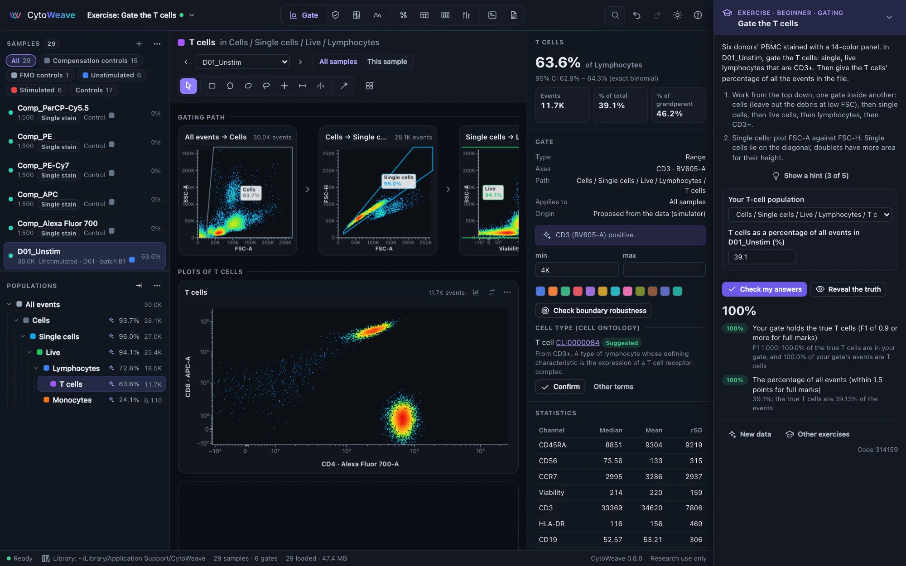
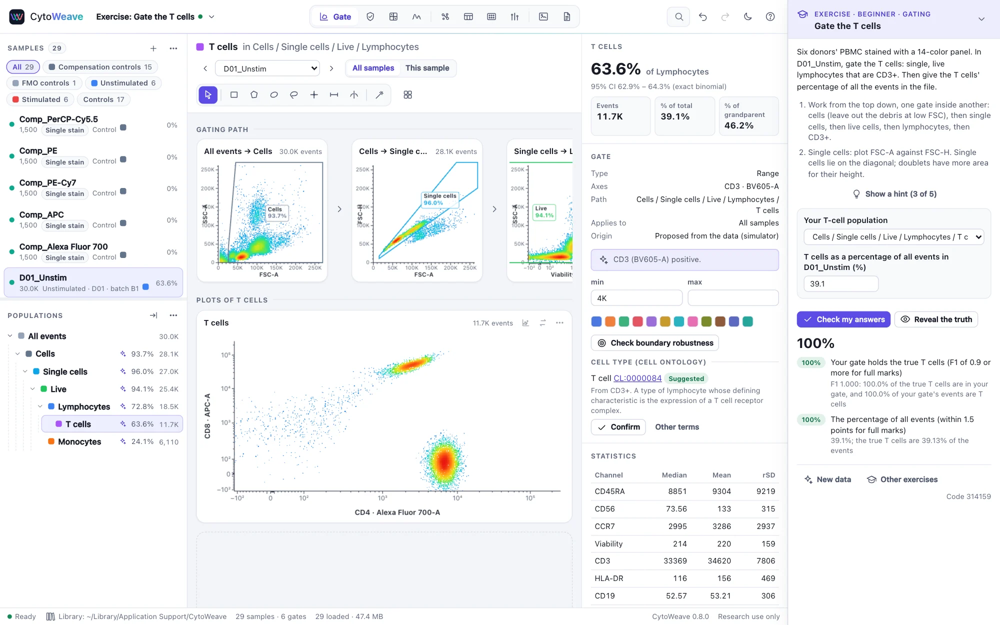
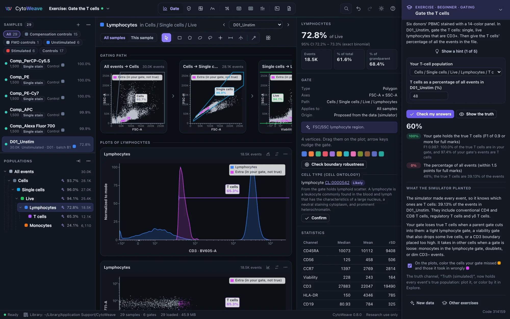
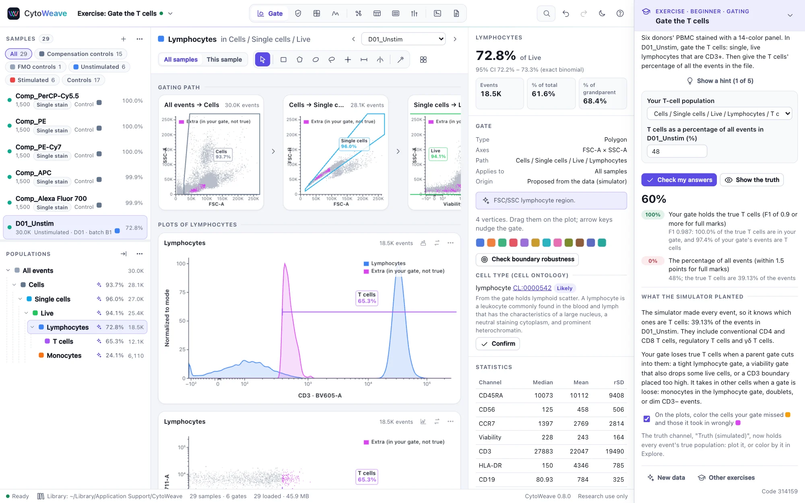

Exercises
Exercises on the example experiments ask a question, let you answer it with CytoWeave's views, check your answer against the simulator's truth, and then show what was planted. They stay out of the way until you open one.
Starting an exercise
Open the list of exercises from the start page (Exercises, below the example experiments), with Exercises… in the workspace menu, or by searching for "exercise" (⌘K). Each one opens its example as a new workspace named after the exercise, with new data every time: a different seed gives other cells, and for many exercises another planted problem (another sample with the clog, another degraded tandem, another population that differs between groups).
To give a class the same data, type a Class code (any number) before choosing the exercise. Everyone who enters the same code gets the same data and the same planted problems, so answers can be compared. The panel shows the code of every attempt.


Working through it
The exercise panel takes a column at the right of the window. It holds the question, the answers and the checks; the analysis itself is done in the usual views, so an exercise teaches CytoWeave as it is used. Fold the panel away with its arrow and bring it back from the tab at the bottom right.
- Hints open one at a time, from where to start to the step that gives the answer.
- Answers are chosen or typed in the panel: one of your populations (the gate you drew), a sample, a channel, a choice from a list, or a number. Answers are saved with the workspace as you give them.
- Check my answers scores each part against the truth, with partial credit: a gate by how well it holds the true events (its F1 score, from the share of the true cells it holds and the share of its events that are true), a number by how close it is, a planted problem by naming the right sample and then the right cause. Check as often as you like; every check is kept with the workspace.
Revealing the truth
Reveal the truth shows what the simulator planted and why, and the true values of every part. The Truth (simulated) channel then holds every event's true population, to plot or to color by in Explore. For a gate, the plots color the events it missed and those it took in wrongly. You can still change your answers and check them; those checks say they came after the truth was revealed.


The exercises
| Exercise | Level | Done in | What it asks |
|---|---|---|---|
| Gate the T cells | Beginner | Gate | Single, live, CD3+ lymphocytes of a PBMC sample, and their share of all events. |
| Find the sample with an acquisition problem | Beginner | QC | Which of twelve samples had a clog. |
| Name each acquisition's problem | Beginner | QC | Four wells: clean, a clog, drift or an air bubble, in an order that changes. |
| Choose an antibody amount | Beginner | QC → Titration | The amount per test from a titration series. |
| Measure cell-cycle phases | Beginner | Cell cycle | S phase and G2/M, after gating out doublets. |
| Count CD4 T cells per microliter | Beginner | Tables | A patient's CD4 count from counting beads. |
| Find the regulatory T cells | Intermediate | Gate | CD25+ CD127-low CD4 T cells, and their share of CD4 T cells. |
| Find the wrong spillover value | Intermediate | Compensate | The entry of the file's matrix that is wrong, and its value. |
| Test a stimulation effect | Intermediate | Compare | The direction, a test that fits a paired design, and its p-value. |
| Find the most potent compound | Intermediate | Plates | The most potent inhibitor, its IC50, and the inactive compounds. |
| Read a cytokine concentration | Intermediate | Bead assay | A serum's concentration of one cytokine, corrected for its dilution. |
| Compare calcium responses | Intermediate | Kinetics | The strongest stimulus and the share of cells it makes respond. |
| Measure T-cell proliferation | Intermediate | Proliferation | The percentage of the starting CD4 T cells that divided. |
| Follow an instrument with daily beads | Intermediate | QC → Instrument | Which detector is aging, from which run, and what failed on another day. |
| Adjust gates for a second day | Intermediate | Gate | A day-2 sample's T cells, without moving the day-1 samples' gates. |
| Diagnose a problem in a spectral panel | Advanced | Spectral | The dye that is wrong in the samples, and why. |
| Find what is wrong with the day-2 controls | Advanced | Spectral | Two faulty reference controls, each faulty in its own way. |
| Find a population that differs between groups | Advanced | Explore, Compare | Cleanup, normalization of two batches, clustering and differential abundance in a mass cytometry cohort. |
For teachers
- Every learner works in their own library, on their own computer: nothing is sent anywhere. To see a learner's work, have them export the workspace (Workspace file (.cwz)) or open it on their computer: the panel shows their answers and their last check, and the workspace keeps every check with its score and time.
- The truth is not in the workspace. The workspace keeps the exercise and its seed; the answer key is computed again from them when answers are checked, and only if the workspace's files are the ones that seed makes (their SHA-256), so a replaced file is not checked against another attempt's answers. Opening a workspace file in a text editor shows no answer.
- The examples outside an exercise are the same experiments with their truth in view: a demonstration can open one from the start page and color the plots by the truth channel at once.
Exercises check what the simulator knows: the true population of every cell and every planted fault. Real data are messier; the exercises teach the moves and the reasons, not every judgment a real panel needs.
Out of the way
Nothing about exercises shows in your own analyses: the panel appears only in a workspace an exercise made, the examples open from the start page exactly as before, and the only reminder elsewhere is one line on the start page.